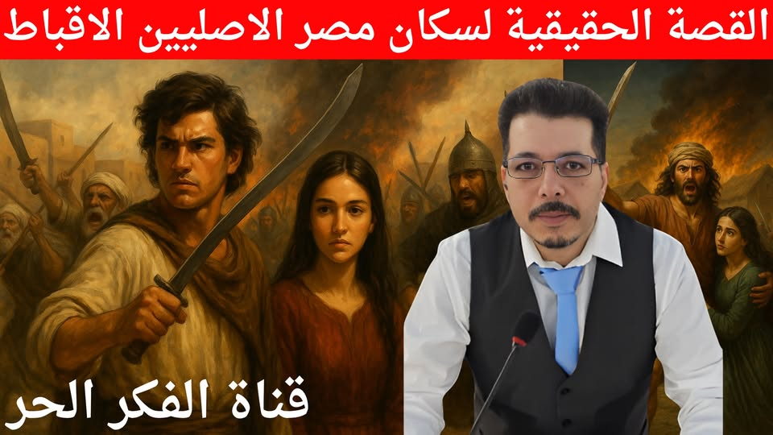

تعداد الملحدين في مصر
0

🔴 اضغط هنا لمشاهدة البث المباشر الآن
قصة كفاح السكان الاصليين في مصر #الاقباط
في أقصى شمال دلتا النيل، كانت بشمور، تلك الأرض التي غمرتها المستنقعات، وحمتها القنوات المائية، تختبئ كجوهرة خضراء وسط الطين. كانت الحياة هناك بسيطة، لكنها مفعمة بالكرامة. البيوت من الطين المجفف بالشمس، مدعّمة بأعمدة من البردي، وأسقفها من القش. في الداخل، الأثاث الخشبي الخشن يحيط بموقد من الطوب تُطهى عليه وجبات بسيطة: عدس، خبز شعير، سمك مشوي على النار الحية، وأحيانًا حساء بصل بنكهة الكمون.
في صباحات القرية، كانت النسوة يخبزن في التنور الطيني، والأطفال يلعبون بطائرات ورقية بدائية مصنوعة من قصب ومخلفات القماش، والرجال يصلحون شباك الصيد أو يقطعون أعواد البردي لصناعة السلال. وكان في تلك البيئة، نشأ إسحق.
إسحق، شاب مسيحي قبطي من سكان مصر الأصليين احفاد من بنوا الاهرامات في أوائل العشرينات، كان طويل القامة، قوي الجسد، ذا عيون بنية داكنة كأرض بشمور بعد المطر. نشأ وهو يسمع من جدته حكايات جده مينا بن أباكير، الذي قاد ثورة قديمة ضد ظلم العرب المسلمين، كيف كان يقود القتال من المستنقعات، ويُرعب الولاة من حيث لا يُرون. كانت القصص تُروى على ضوء المصباح الزيتي، وحين يسكت الجميع، تبقى عينا إسحق تتوهجان شوقًا ليوم ينتقم فيه لجده.
لم يكن إسحق وحده في أحلامه. كان له صديق طفولة يُدعى يوحنا، أقل منه حجمًا، لكنه أشد ذكاءً. كان يوحنا يعمل كاتبًا لدى شيخ القرية، ويتقن الخط القبطي والعربي معًا. كان إسحق هو السيف، ويوحنا هو العقل. لا يفترقان، حتى قيل إن أحدهما إن بكى، سالت دمعة الآخر.
أما ايزيس، فكانت وردة بشمور. ابنة وحيدة لأب صياد وأم توفيت وهي صغيرة. ربّتها عمتها بصرامة، لكن بمحبة كبيرة. كانت تذهب إلى الكنيسة يوميًا، تغسل قدمي العجائز، وتجمع الحطب للمرضى. وجهها كان لوحة من عهد الفراعنة: أنف مستقيم، عينان واسعتان بلون العسل، وجدائل سمراء تتدلى على كتفيها، وصوتها هادئ كهمس البردي.
في أحد أيام السوق، حين اجتاح الجنود العباسيون القرية، وقعت الشرارة. حاول ضابط عربي مسلم يُدعى سالم أن يجرّ ايزيس من يدها أمام الناس. وقف إسحق ويوحنا معًا، وبينما جذب إسحق يد الضابط بقوة، سحب يوحنا عصًا حديدية من كومة حطب وضرب بها أحد الجنود. اشتبك السوق، وسقط أحد الجنود قتيلًا، وهرب الآخرون. كانت تلك اللحظة ميلاد الثورة.
قبل تلك الحادثة، كان الضغط يتصاعد. طُلب من أهل بشمور دفع #الجزية مضاعفة، أو #اعتناق #الإسلام، أو مواجهة #الموت. كانت هذه السياسات تمارس بشدة في أطراف الدلتا، حيث كان يُخيّر الأقباط بين الإسلام أو السيف، أو دفع الجزية وهم صاغرون. رفض أهل #بشمور، وازدادت القبضة.
في #الفسطاط، جلس الخليفة المأمون على عرشه، وأمر #البطريرك #يوساب الأول أن يكتب لأهل بشمور يأمرهم بالاستسلام. وكان يوساب بطريارك متخاذل ينفذ أوامر الخليفة ولا يهتم بالرعية كان مثلة مثل جابي الضرائب او قائد العسس ينفذ الأوامر . وصلت رسائل البطريرك إلى القرى، قرأها الشيخ متياس بصوت متردد، لكن إسحق انتزعها ومزقها أمام الحشد: "لا طاعة لمن يبيع دماءنا."
اجتمع شيوخ القرية، وأعلنوا العصيان. قال إسحق: "لن نركع لمن أذلّ جدودنا." وقال يوحنا: "لن نكتب بعد اليوم حرفًا لغير الحق."
بدأ الأهالي يتحصنون. أغلقوا الممرات بالطين المبلل، وأعدوا الكمائن في الماء. النساء أعددن الزيت المغلي، والأطفال جلبوا الحجارة. القوارب الصغيرة حُمّلت بالسهام والحبال.
وفي إحدى الليالي، جلس إسحق وايزيس على حافة المستنقع، القمر ينعكس على وجه الماء. قالت ايزيس: "أخاف أن تأخذك الحرب مني." رد إسحق: "أخاف أن لا أكون جديرًا بك إن لم أحارب." سكتت لحظة، ثم همست: "إن مت… فتذكرني كلما رأيت البردي يهتز في الريح."
لكن الحرب لم تنتظر كثيرًا. دخل القائد العباسي الأفشين الدلتا من الشرق، عبر أدلاء خونة. في الفجر، هجمت الجيوش على أطراف القرى. كان يوحنا في برج المراقبة حين رأى راياتهم السوداء. صرخ محذرًا، وبدأت الصفارات.
اشتعلت الحرب. القصب احترق، الدم امتزج بالطين. إسحق يقاتل بسيف جده، ويوحنا يوزع الخطط على المقاتلين.
في معركة "تل البركة"، أحاط الجنود بإسحق. كان وحيدًا بعدما قُطعت طريق العودة. قفز يوحنا من مكانه، وصرخ: "لن يموت وحده!"
اندفع وسط الجنود، شتتهم، وصد عن إسحق ضربة قاتلة، فاخترق السيف ظهره. سقط يوحنا على الأرض، وابتسم وهو يقول: "لم أبكِ وحدي أبدًا… فلا تعش وحدك." ومات.
بكى إسحق كما لم يبكِ رجل من قبل. حمل جثمانه على كتفه، ودفنه تحت شجرة توت في وسط القرية، ووضع على قبره حجرًا نُقش عليه: "رفيق الدمع، ورفيق الدم."
في تلك الأيام، احتمت ايزيس في الكنيسة. حوصرت بالنار والجنود. عرضوا عليها النجاة، بشرط إعلان إسلامها. لكنها رفضت وقالت خير لي اموت مسيحية افضل من أعيش وانا في ذل الاسلام. جمعت الأطفال في المذبح، صلت معهم، وغرقت معهم في النار.
بعد قمع ثورة البشموريين بقيادة الخليفة العباسي المأمون، كان مصير المنطقة مأساويًا:
تدمير شامل:
قام القائد الأفشين (بأمر المأمون) بتدمير القرى البشمورية، وأحرق المنازل، وخرّب الكنائس، وجفف القنوات المائية التي كانت تحميهم طبيعيًا.
أُبيدت الزراعة، وحرقت أراضي البردي، وأُفرغت المنطقة من سكانها بشكل ممنهج.
تهجير جماعي:
تم نفي عشرات الآلاف من الأقباط البشموريين إلى العراق وخراسان.
سُبي النساء والأطفال، وانتهت الهوية المحلية لتلك المنطقة كمجتمع متمرد مستقل.
تغيير التركيبة السكانية:
تم توطين سكان عرب ومسلمين في بعض أجزاء المنطقة لضمان ولاءها، ومنع قيام ثورات مستقبلية.
بشمور لم تكن قرية واحدة، بل كانت:
منطقة واسعة في شمال شرق دلتا النيل، خاصة ما بين:
فرع دمياط وفرع رشيد
وتشمل أجزاء من محافظات الدقهلية وكفر الشيخ والشرقية اليوم
أقرب الأماكن المرتبطة ببشمور اليوم:
منطقة المطرية (في محافظة الدقهلية)
شمال المنزلة
حول بحيرة المنزلة
شبرا البشموري (قرية في الدقهلية، واسمها ما زال قائمًا)
المرجع
المقريزي و ساويرس بن المقفع، وكتاب "ولاة مصر" للكندي، كلهم أشاروا إلى الموقع المائي لبشمور، واعتماد أهلها على البردي، والسمك، والمستنقعات كمصدر حياة ودفاع.
سقطت بشمور، قُتل آلاف، ونُفي مئات الآلاف، وإسحق نُقل بالأغلال إلى العراق. لكن الحكاية بقت.
كانت تُروى في الظلام، وتُكتب بالدم، وتُغنّى في الزرع، أن هناك أرضًا لم تركع، لأن أهلها كانوا يؤمنون أن الحرية أثمن من الحياة.
هذه قصة كفاح شعب مصر السكان الأصليين دون تذوير التاريخ والمراجع مرفقة في الأسفل .
الاقباط المصريون لم يكونوا ضعفاء او متخاذلون ولم يرحبوا بالغزاة العرب المسلمين بل قاوموا وحاربوا ودمائهم تروي تربة ارض مصر لكن محوا المستعمرون العرب كل تاريخ النضال المشرف للسكان الأصليين في مصر .
#باسم_سام #قناة_الفكر_الحر
#bassem_sam
المراجع المستخدمة:
الكندي: ولاة مصر
ساويرس بن المقفع: تاريخ البطاركة
ديونيسيوس التلمحري
المقريزي: الخطط
Lapidus: Islamic Societies
Goddard: Coptic Resistance under Islam
الموسوعة البريطانية: Bashmurian Revolts
ويكيبيديا: ثورة البشموريين (الإنجليزية والعربية)
مقالات بحثية غربية عن بشمور
Military History Fandom: Bashmurian Revolt
قصة كفاح السكان الأصليين في مصر #الأقباط

قصة كفاح السكان الأصليين في مصر #الأقباط